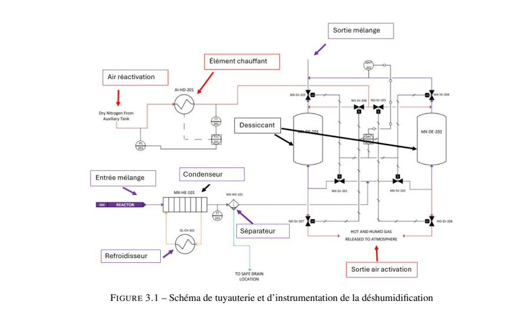
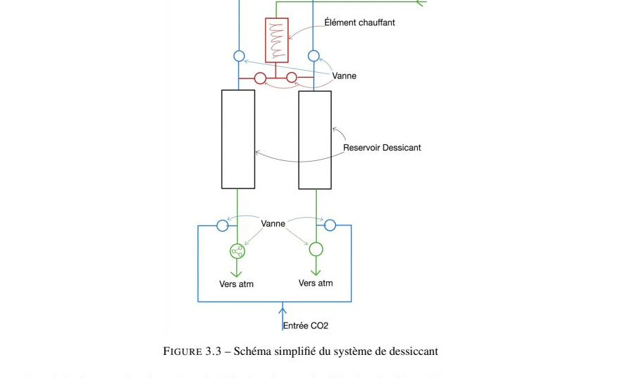
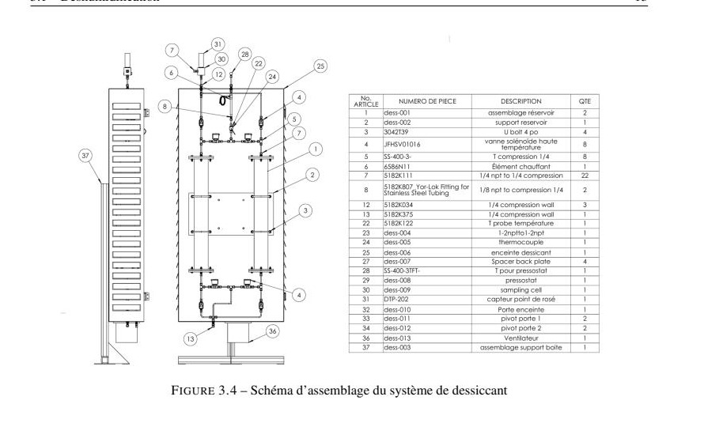
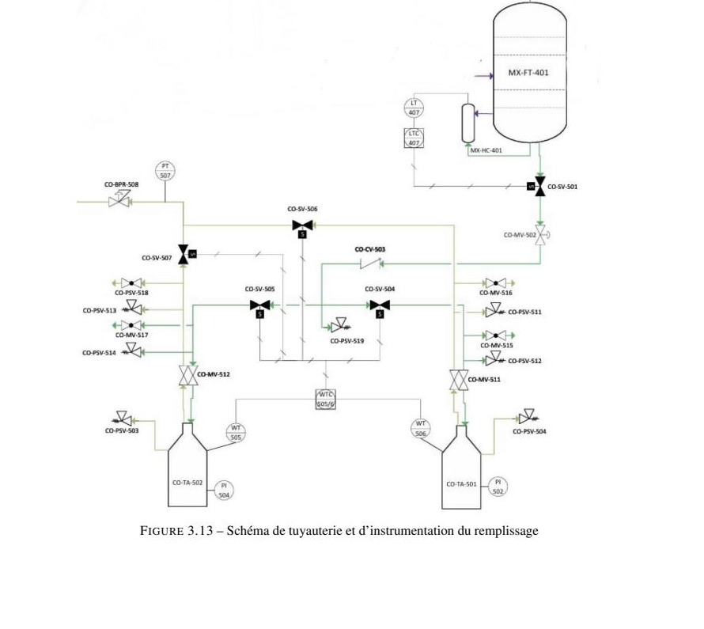
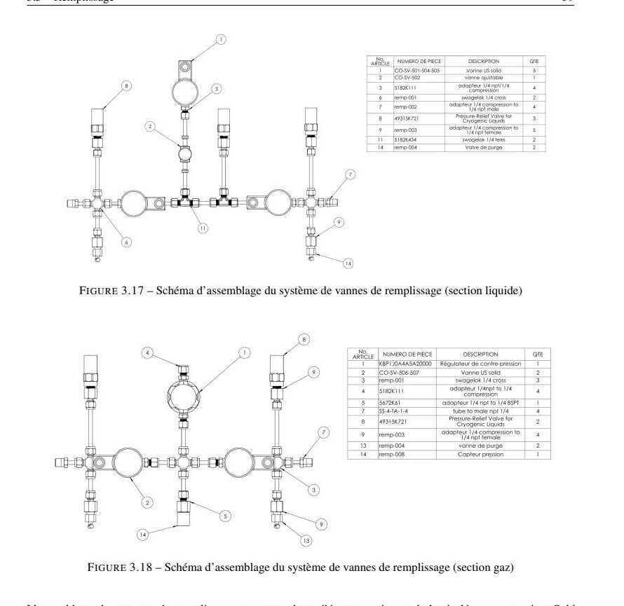

Contexte
- Mandat : Skyrenu inc. — l'entreprise capte du CO2 atmosphérique (technologie Direct Air Capture) mais n'avait pas de moyen de le liquéfier à petit échelle pour le transport
- Cadre académique : Projet de fin de baccalauréat en génie mécanique, Université de Sherbrooke (PMC660/PMC760)
- Objectif de l'équipe : Concevoir et réaliser une preuve de concept automatisée liquéfiant le CO2 capté
- Mon rôle : Conception détaillée et validation expérimentale des sous-systèmes de déshumidification et de remplissage
30 t/anCapacité de traitement visée
95 %Pureté visée du CO2 liquéfié
5' × 5'Empreinte au sol maximale
Comment ça fonctionne
Le prototype repose sur un cycle de Linde (compression, refroidissement, puis détente Joule-Thomson pour liquéfier le gaz), auquel l'équipe a ajouté une section de déshumidification et de purification en amont. Il comprend quatre sous-systèmes majeurs : déshumidification, compression (2 étages), séparation et remplissage. J'ai fait la conception de deux maillons de cette chaîne — la déshumidification et le remplissage — détaillés ci-dessous.
Sous-systèmes conçus
Cliquez sur une fiche pour voir les détails.
Contribution individuelle
Déshumidification
Retirer l'humidité du gaz source avant la section cryogénique
- Démarche
- Le gaz capté contient beaucoup d'humidité. Non traitée, cette eau gèlerait dans la section cryogénique en aval et formerait un composé corrosif pour les composants. Il fallait assécher le gaz de façon fiable, et en continu.
- Approche
- Combinaison de deux technologies en série : un condenseur retire d'abord le gros de l'humidité, puis un système à double colonne de tamis moléculaire finit l'assèchement — pendant qu'une tour adsorbe l'eau, l'autre se régénère par chauffage, avec bascule automatique entre les deux pilotée par un capteur de point de rosée.
- Résultat
- Un point de rosée très bas atteint en sortie, avec une autonomie de plusieurs heures avant régénération — permettant un fonctionnement continu sans intervention.



Contribution individuelle
Remplissage
Transférer le CO2 liquide vers les bonbonnes de transport
- Démarche
- Transférer le CO2 liquide récolté, proche de son point triple, vers des bonbonnes de transport, en gérant un équilibre liquide-gaz précaire — sans avoir recours à une pompe cryogénique, écartée pour son coût et sa complexité.
- Approche
- Un remplissage passif par différentiel de pression contrôlé, en trois temps : refroidissement de la bonbonne cible, remplissage continu jusqu'à saturation, puis détection de fin par mesure de poids (cellules de charge) et bascule automatique vers une bonbonne vide pendant que l'opérateur retire la pleine.
- Résultat
- Un système qui ne demande une intervention humaine qu'à intervalles de quelques heures (changement de bouteilles), avec une sécurité intrinsèque assurée par des soupapes sur chaque segment du circuit.

